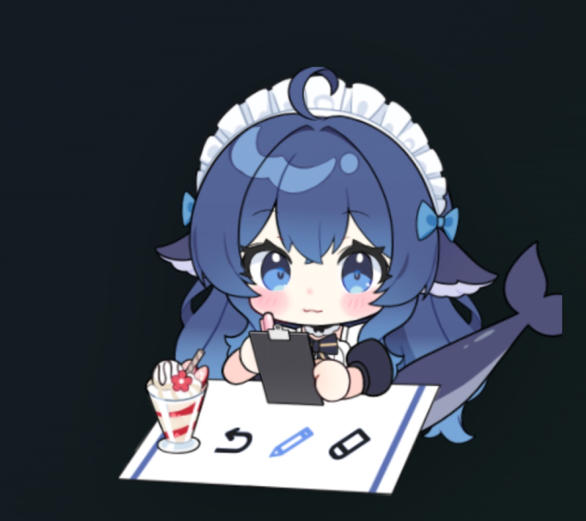
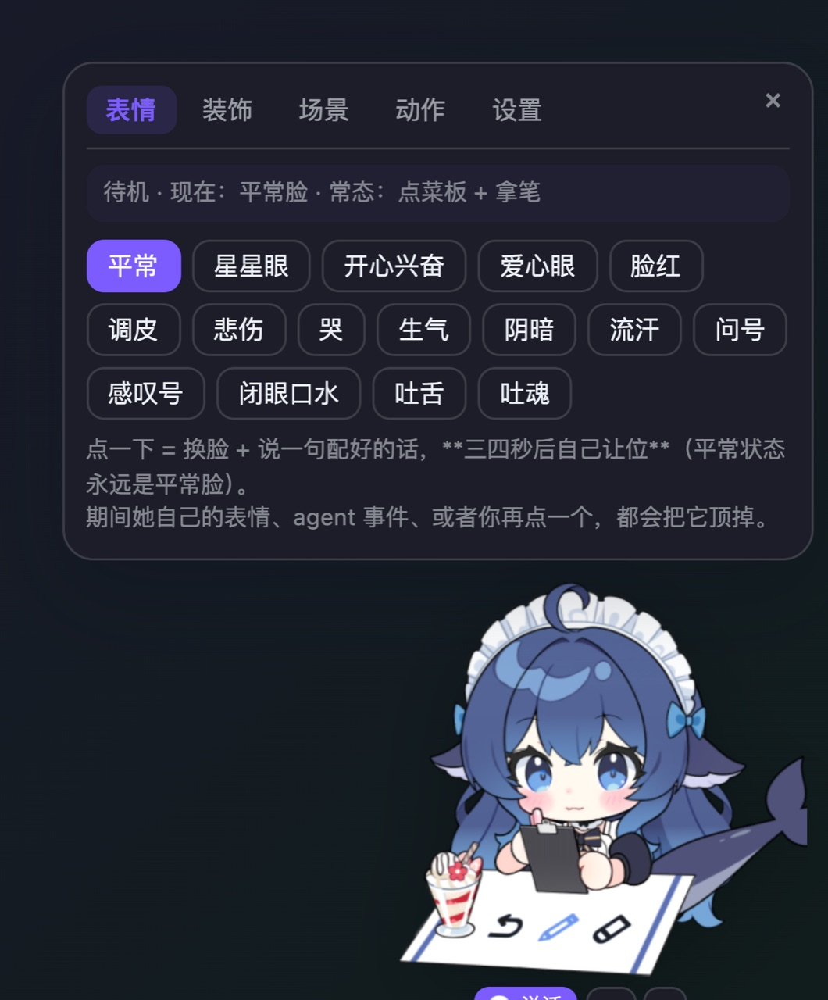
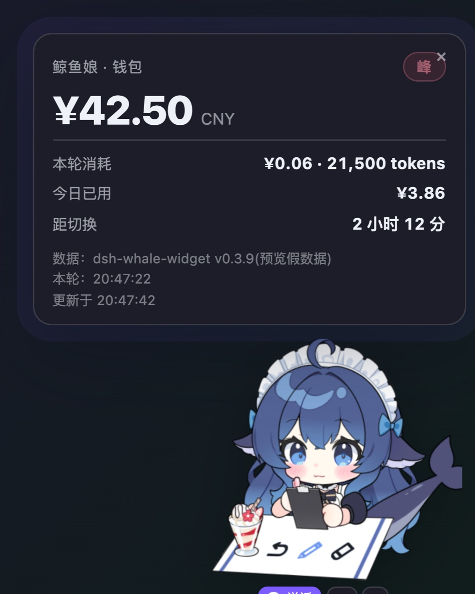
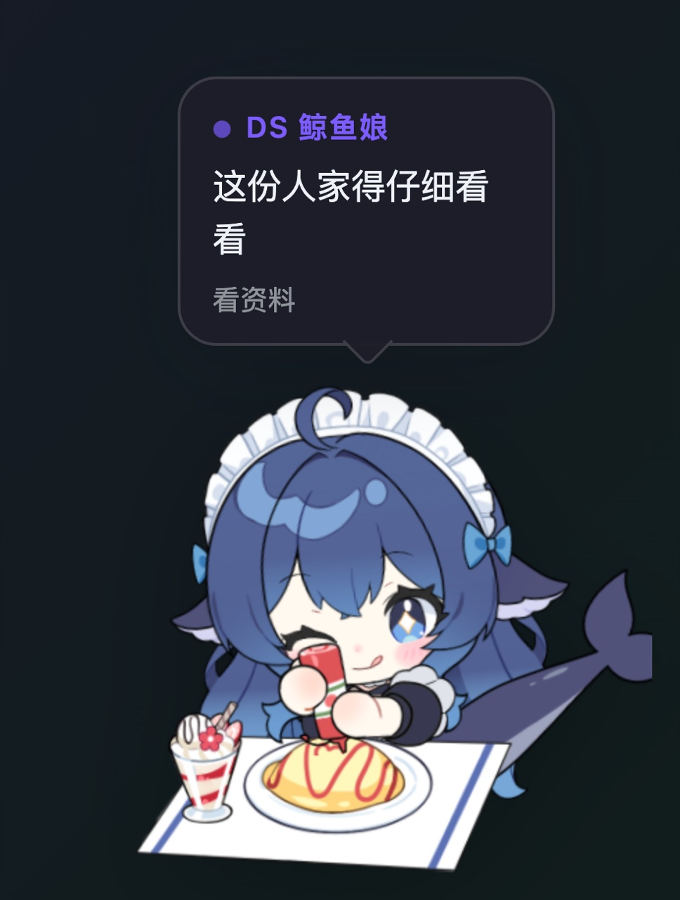

她会跟着 AI 一起干活：我思考她翻本子，我查资料她戴眼镜，我写完她伸懒腰。
点她一下就能跟 AI 说话，右键是钱包。
不想装客户端？网页版一条命令即可（Windows / Mac 通用）：
dsh plugin --profile web add github:Andersen216/dsh-whale-girl-live2d




三种可能：插件没装 / DSH 没运行 / 插件在设置里被停用了。点客户端里的「一键安装插件」，然后重启 DSH。
自检：curl -s -o /dev/null -w "%{http_code}" http://127.0.0.1:3080/dsh-pet/pet.js
返回 401 就是好的。
看 ~/.dsh/profiles/web/cordis.patch.yml 里有没有 - id: dsh-live2d-pet 加
disabled: true，有就把这两行删掉再重启 DSH。
在 Releases 里，
文件名 DS-WhaleGirl-Pet-Windows-Setup.exe。它由 GitHub Actions 在 Windows 机器上编译，
如果暂时还没有，可以先按 README 自己编译，或者先用网页版。
切到「低性能模式」（托盘 / 菜单栏图标里）：不自己找戏、不自言自语，只眨眼和轻微摆动，点了她才动。省电明显。